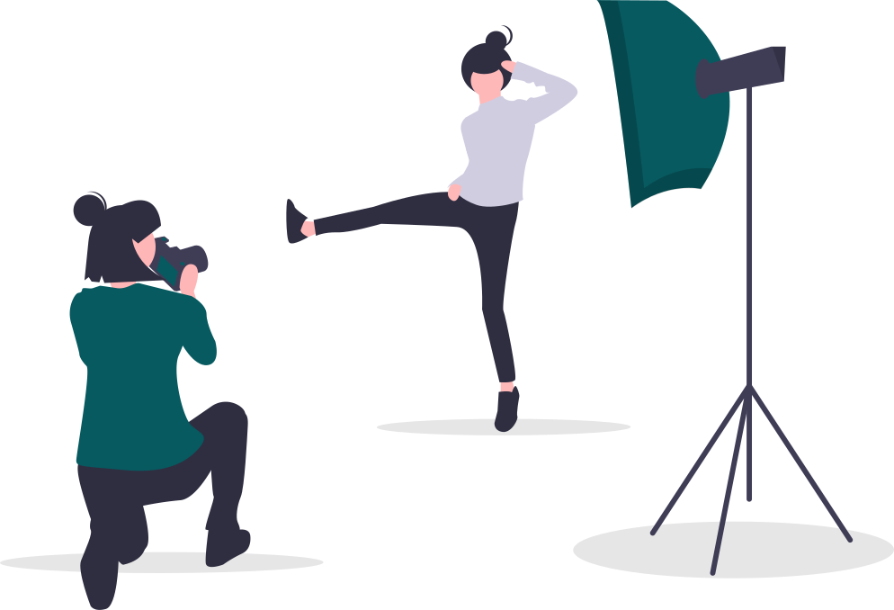
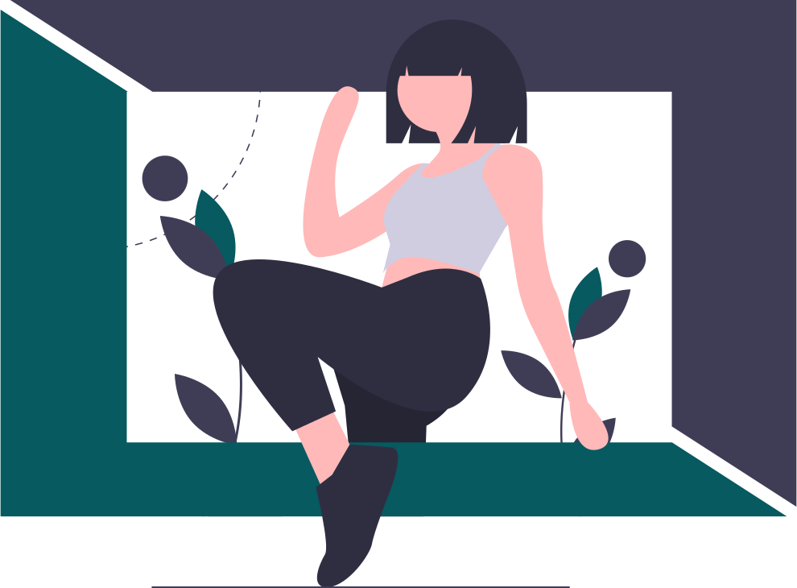
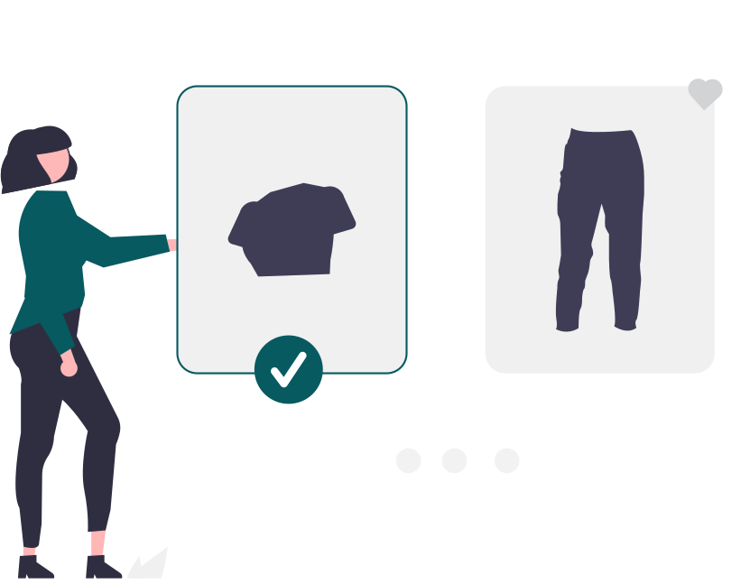
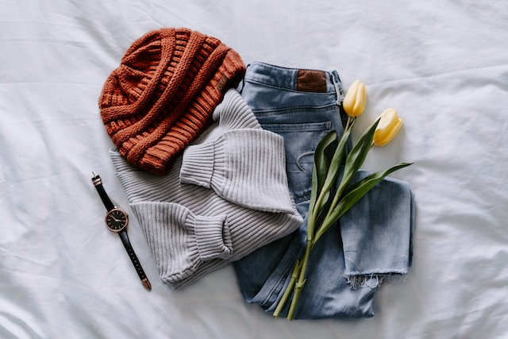
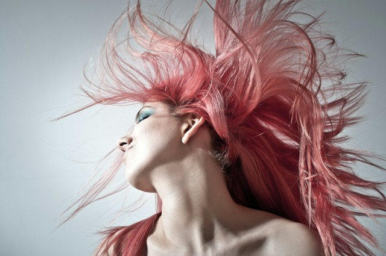

o mnie
Cześć, mam na imię Anastazja. Zawsze interesowałam się modą, stylami i doborem barw. Dość szybko zauważyłam, że wiele kobiet noszących aktualnie najmodniejszy kolor, nie wygląda w nim zbyt korzystnie. Ja sama kiedyś często popełniałam takie błędy. Zagadką było dlaczego? „Bo jej nie pasuje” nie stanowiło wystarczającego tłumaczenia. W ten sposób wkroczyłam na ścieżkę analizy kolorystycznej, którą pilnie zgłębiałam. Teraz chętnie podzielę się z Tobą moją wiedzą.
Podstawowe ubogie koło Czterech pór roku rozwinęło się w pełen wachlarz 12 typów urody, z których każdy ma swój walor i temperaturę, a także swoją paletę kolorów, które pięknie harmonizują z odcieniem skóry, włosów i oczu. Zapraszam do Wyszykowanej, oprowadzę Cię po tym świecie i sprawię, że odnajdziesz właściwe barwy i styl, a w lustrze ujrzysz swoje zupełnie nowe odbicie.

oferta
Analiza kolorystyczna to klucz do tworzenia szafy kapsułowej, pomoże Ci budować ją od podstaw. Czym jest analiza kolorystyczna? To właśnie ona określa jakim typem urody jesteś. Wyróżnia się ich 12 i każdy z nich ma swoją indywidualną paletę barw. Zalety analizy kolorystycznej:
- Poznasz swój typ kolorystyczny i będziesz wiedziała jak to wykorzystać w praktyce.
- 
- Sprecyzowane cele zaoszczędzą czas na zakupach ale też zmieni się Twoje podejście do nich.
- Świadomość dopasowania barw do Twojej urody zwiększy pewność siebie i poczucie atrakcyjności.
- 
- Zawartość Twojej szafy będzie przemyślana i spójna.
- Nie będziesz miała problemów z doborem ubrań.
- 

Co otrzymasz wraz z analizą?
- Prezentację składającą się z 60 stron wraz ze szczegółowymi opisami.
-
 Dowiesz się, które kolory podkreślą Twoją urodę, a których lepiej
unikać.
Dowiesz się, które kolory podkreślą Twoją urodę, a których lepiej
unikać.
-  Poznasz swoją bazę ubraniową oraz pomysły na łączenie kolorów i ciekawe stylizacje.
-
 Dowiesz się jak dobrać makijaż do swojego typu urody.
Dowiesz się jak dobrać makijaż do swojego typu urody.
-  Jeśli masz dylemat odnośnie koloryzacji włosów, wskazówki również znajdziesz w prezentacji.
opinie
Polecam Anastazję i jej analizę kolorystyczną, bo dzięki niej zawsze będziesz wiedziała na co zwracać uwagę przy doborze makijażu czy ubrań. Profesjonalne przygotowanie, wywiad i instrukcje. Wszystko bardzo jasno wytłumaczone.
Zdecydowanie polecam analizę kolorystyczną od Pani Anastazji! Szybko, profesjonalnie, a kontakt z nią rewelacyjny. Świetne doświadczenie, dzięki któremu lepiej zrozumiałam swoje kolory i styl.
Profesjonalnie przedstawiona analiza kolorystyczna, utwierdziła mnie, że większość kolorów w mojej szafie jest dla mnie. Z resztą kolorów bez żalu się pożegnam. Bardzo szybko dostałam informacje, polecam.
Bardzo polecam analizę kolorystyczna wykonana przez Anastazję! Jestem wdzięczna za ogrom pracy, którą wykonała na moim przypadku. Profesjonalne podejście do klienta, cudowna osoba na właściwym miejscu.
Polecam analizę kolorystyczną u Anastazji - szczegółowe przedstawienie typu kolorystycznego, wskazówki co wybierać w tworzeniu stylizacji. Bardzo przejrzysta forma. Jestem zadowolona z efektów!
Dostałam pięknie, profesjonalnie wykonaną, a przede wszystkim trafną analizę. Upewniłam się co do swojego typu kolorystycznego. Polecam!
Polecam p. Anastazję i jej analizę kolorystyczną. Świetny kontakt! Sama analiza przeprowadzona sprawnie, online. Wyniki opisane bardzo wnikliwie, przystępnie z odpowiednimi zdjęciami.
Więcej opinii znajdziesz na moim profilu na Facebooku:
WyszykowAna - Anastazja ZdanowiczZapraszam Cię również na Instagrama:
wyszykow_ana